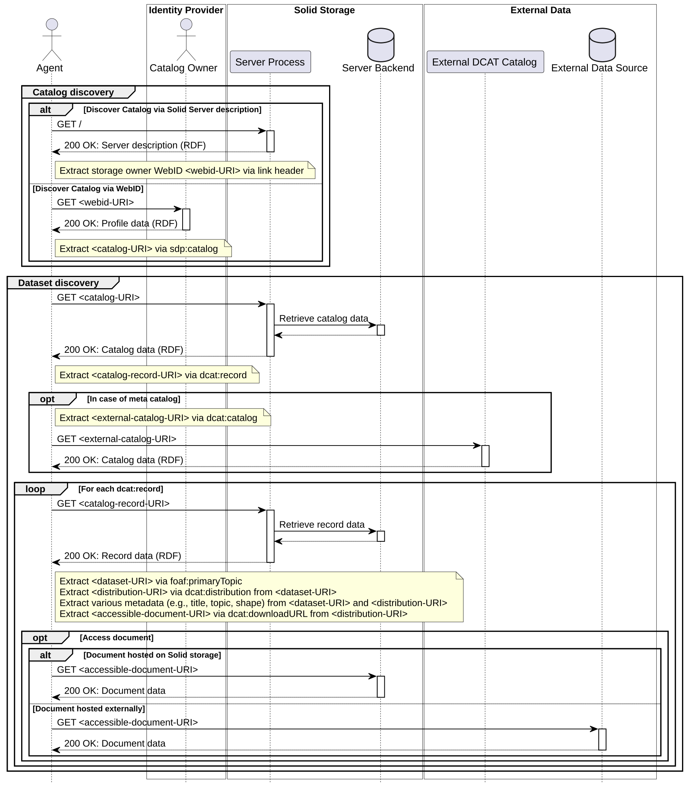

This specification defines the Solid DCAT Profile, a standard mechanism for discovering datasets within the Solid ecosystem. By mapping the resource-centric architecture of the Solid Protocol to the dataset-centric data model of the Data Catalog Vocabulary (DCAT), this profile enables clients to discover and traverse resources across decentralized Solid storages using standard HTTP link traversal.
This is an unofficial proposal intended for review by the W3C Solid Community Group. This specification builds upon concepts initially presented as a poster at the Solid Symposium 2026 and the Fourth International Workshop on Semantics in Dataspaces (SDS 2026) [[SOLID-DCAT-WS]].
The Solid Protocol [[SOLID-PROTOCOL]] provides mechanisms for managing data in an interoperable and access-controlled manner across decentralized storages. However, the protocol itself does not prescribe a standard mechanism for discovering datasets across these federated environments.
The Solid DCAT Profile offers a discovery mechanism for Solid-based dataspaces by augmenting Solid's RESTful, resource-centric perspective with a dataset-centric, data catalog-style view based on the DCAT standard. By additionally understanding the data catalog itself as a collection of data which allows (1) the data catalog to be managed and interacted with via the Solid Protocol, and (2) the Solid-managed data catalog to be decoupled from the Solid-managed cataloged data, the Solid DCAT Profile provides the following benefits:
This specification is intended for:
This specification adopts terminology from the Linked Data Platform (LDP) and the Data Catalog Vocabulary (DCAT), including but not limited to:
dcat:Dataset.dcat:DatasetSeries.dcat:Distribution.dcat:CatalogRecord.This section describes the conformance model of the Solid DCAT Profile.
The Solid DCAT Profile identifies the following Specification Category to distinguish the types of conformance: notation/syntax, processor behavior, protocol.
The Solid DCAT Profile identifies the following Classes of Products for conforming implementations.
dcat:Catalog, dcat:CatalogRecord, dcat:Dataset, dcat:DatasetSeries, and dcat:Distribution to describe resources and containers.dcat:record and dcat:distribution links to access data.This profile establishes [=Client–Server Interoperability=] and [=Cross-Ecosystem Interoperability=].
dcat:record and dcat:distribution links to obtain and validate the corresponding datasets from any conforming Storage Server.
dcat:Catalog, dcat:Dataset, and dcat:Distribution descriptions hosted on a conforming Storage Server using standard RDF and HTTP semantics, without requiring Solid-specific discovery logic.
This profile is designed to be orthogonal to other core Solid specifications:
dcat:CatalogRecord based on native Solid authorization checks, independent of the discovery traversal.
dcat:Dataset, or a server could offer message-based queries by exposing the underlying DCAT metadata through a query interface alongside the RESTful interface.
This allows the server to remain un-opinionated and enables clients to choose the discovery mechanism best suited to their needs.The following prefix declarations are used by the SHACL shapes and Turtle examples in this document.
@prefix sdp: <http://purl.org/sdp/terms#> .
@prefix sh: <http://www.w3.org/ns/shacl#> .
@prefix dcat: <http://www.w3.org/ns/dcat#> .
@prefix dcterms: <http://purl.org/dc/terms/> .
@prefix xsd: <http://www.w3.org/2001/XMLSchema#> .
@prefix foaf: <http://xmlns.com/foaf/0.1/> .
The Data Catalog Vocabulary (DCAT) [[!DCAT]] provides standardized RDF terms for describing data catalogs in flexible ways. In some domains or in the context of specific applications, it is necessary or required to be more explicit about a data model's intended usage. The Solid DCAT Profile does exactly that. It adopts DCAT's data model in parts and states how Solid DCAT data catalogs are represented that augment Solid storages and curate their Solid-managed resources. In the following, we specify the added constraints on the data model as SHACL shapes [[!SHACL]]. This section describes the shapes that define how Solid DCAT data catalogs are represented.
A dcat:Catalog is a collection of metadata records describing Solid resources. Our profile data model defines the following requirements w.r.t. data catalogs:
dcat:record MUST conform to the shape sdp:CatalogRecordShape.dcat:dataset MUST conform to sdp:DatasetShape.dcat:DatasetSeries, it MUST conform to sdp:DatasetSeriesShape.
sdp:CatalogShape
a sh:NodeShape ;
sh:targetClass dcat:Catalog ;
sh:property [
sh:path dcat:record ;
sh:node sdp:CatalogRecordShape
] ;
sh:property [
sh:path dcat:dataset ;
sh:node sdp:DatasetShape ;
sh:class dcat:Dataset ;
sh:or (
[
sh:not [ sh:class dcat:DatasetSeries ]
]
[
sh:node sdp:DatasetSeriesShape ;
sh:class dcat:DatasetSeries
]
)
] .
A dcat:CatalogRecord is a metadata document about a Solid resource. Our profile model defines the following requirements w.r.t. catalog records:
dcat:CatalogRecord document MUST link the targeted Solid resource that the document's metadata is about via foaf:primaryTopic.sdp:DatasetShape.dcat:DatasetSeries, it MUST conform to sdp:DatasetSeriesShape.
sdp:CatalogRecordShape
a sh:NodeShape ;
sh:targetClass dcat:CatalogRecord ;
sh:property [
sh:path foaf:primaryTopic ;
sh:minCount 1 ;
sh:maxCount 1 ;
sh:node sdp:DatasetShape ;
sh:class dcat:Dataset ;
sh:or (
[
sh:not [ sh:class dcat:DatasetSeries ]
]
[
sh:node sdp:DatasetSeriesShape ;
sh:class dcat:DatasetSeries
]
)
] .
A dcat:Dataset is a collection of data, which comes in one or more representations that make the conceptual notion of a dataset accessible. Our profile model defines the following requirements w.r.t. datasets:
dcat:Dataset MUST link at least one accessible representation via dcat:distribution that conforms to sdp:DistributionShape.dcat:Dataset SHOULD link a theme via dcat:theme to state the dataset's main category.dcat:inSeries MUST conform to the shape sdp:DatasetSeriesShape.
sdp:DatasetShape
a sh:NodeShape ;
sh:targetClass dcat:Dataset ;
sh:property [
sh:path dcat:distribution ;
sh:node sdp:DistributionShape ;
sh:minCount 1
] ;
sh:property [
sh:path dcat:theme ;
sh:minCount 1
] ;
sh:property [
sh:path dcat:inSeries ;
sh:node sdp:DatasetSeriesShape
] .
A dcat:DatasetSeries is a dataset which represents a collection of datasets that are published separately, but share some characteristics that group them. Our profile model defines the following requirements w.r.t. dataset series:
dcat:DatasetSeries is an instance of dcat:Dataset, a dataset series MUST conform to the shape sdp:DatasetShape.dcat:seriesMember MUST conform to sdp:DatasetShape.dcat:DatasetSeries, it MUST conform to sdp:DatasetSeriesShape.
sdp:DatasetSeriesShape
a sh:NodeShape ;
sh:targetClass dcat:DatasetSeries ;
sh:node sdp:DatasetShape ;
sh:property [
sh:path dcat:seriesMember ;
sh:node sdp:DatasetShape ;
sh:class dcat:Dataset ;
sh:or (
[
sh:not [ sh:class dcat:DatasetSeries ]
]
[
sh:node sdp:DatasetSeriesShape ;
sh:class dcat:DatasetSeries
]
)
] .
A dcat:Distribution is an accessible form of a dataset such as a downloadable file. Our profile model defines the following requirements w.r.t. distributions:
dcat:downloadURL.dcat:mediaType.dcterms:conformsTo.
sdp:DistributionShape
a sh:NodeShape ;
sh:targetClass dcat:Distribution ;
sh:property [
sh:path dcat:downloadURL ;
sh:nodeKind sh:IRI ;
sh:minCount 1 ;
sh:maxCount 1
] ;
sh:property [
sh:path dcat:mediaType ;
sh:minCount 1 ;
sh:maxCount 1
] ;
sh:property [
sh:path dcterms:conformsTo ;
sh:minCount 1
] .
This section describes the catalog's behaviour and how cataloged resources are managed.
A Solid DCAT data catalog is a collection of two types of documents: (1) One root catalog document, and (2) several catalog record documents.
A root catalog document MUST conform to the shape sdp:CatalogShape.
A catalog record document MUST conform to the shape sdp:CatalogRecordShape.
These two types of documents are Solid-managed information resources:
The root data catalog document and all its referenced catalog record documents MAY be managed by the same Solid storage server. Nevertheless, federated deployment scenarios are also possible, where the documents are distributed across various Solid storage servers.
There is a 1-1 correspondence between Solid DCAT catalog record documents and information resources managed by a Solid storage server.
When a Solid-managed resource is added to a Solid DCAT data catalog, there MUST exist one catalog record that conforms to the shape sdp:CatalogRecordShape and that links to the Solid-managed resource.
Clients can add a new Solid-managed resource to a Solid DCAT data catalog by performing the following operations:
Creating a corresponding catalog record:
A catalog record MUST be created on a Solid storage server.
When the resource is a ldp:Container, an instance of type dcat:DatasetSeries MUST be created as a secondary resource to the primary catalog record. The catalog record MUST reference the dataset series via foaf:primaryTopic.
When the resource is not a ldp:Container, an instance of type dcat:Dataset MUST be created as a secondary resource to the primary catalog record resource. The catalog record MUST reference the dataset via foaf:primaryTopic.
An instance of type dcat:Distribution MUST be created as a secondary resource to the primary catalog record resource and an additional fragment identifier component.
The created dataset or dataset series MUST link the created distribution via dcat:distribution.
The created distribution MUST link the Solid-managed resource via dcat:downloadURL.
The predicates dcat:inSeries and dcat:seriesMember can be used to represent the containment relations between Solid-managed resources stated by ldp:contains and their inverse.
Linking the new catalog record
The new catalog record MUST be linked by the root catalog document via dcat:record.
A client performs step 1 by a HTTP POST request to a URI path ending with / as defined in the Solid Protocol [[!SOLID-PROTOCOL]] (§5.3).
A client performs step 2 by a HTTP PATCH request to the root catalog document as defined in the Solid Protocol [[!SOLID-PROTOCOL]] (§5.3.1).
Clients can retrieve a representation of a resource's state using HTTP GET, HEAD and OPTIONS, as defined in the Solid Protocol [[!SOLID-PROTOCOL]] (§5.2).
Clients can modify Solid DCAT catalog resources using N3 patches as defined in the Solid Protocol [[!SOLID-PROTOCOL]] (§5.3.1).
Clients can remove Solid-managed resources from the catalog by performing the following operations:
dcat:inSeries, remove the triple that links to the record via dcat:seriesMember from the mentioned dataset series by sending a HTTP PATCH request to the series IRI as defined in the Solid Protocol [[!SOLID-PROTOCOL]] (§5.3.1).DELETE request to the record IRI as defined in the Solid Protocol [[!SOLID-PROTOCOL]] (§5.4).dcat:record by sending a HTTP PATCH request to the catalog IRI.Clients are responsible for managing the containment hierarchy of datasets such as preventing dangling datasets. This may happen through removing the catalog record of a dataset series, before handling potential series members which are linked via dcat:seriesMember.
The Solid DCAT Profile follows the Linked Data Principles and the RESTful architecture-style of the Web. A Solid DCAT data catalog serves as a common entry point for conducting discovery procedures and thus can be referenced by other resources.
A Solid DCAT data catalog can be discovered via the sdp:catalog predicate:
After discovering the catalog itself, the process of discovering datasets is composed of interacting with the resources defined in the profile's data model.
A client can follow a dcat:record link to discover a catalog record containing metadata information about a Solid-managed resource.
A client can follow a dcat:dataset link to directly discover the dataset augmenting a Solid-managed resource.

Catalog records are stored on Solid storages and are separated from their corresponding primary resources by design.
Clients can manage the access of catalog record resources and their Solid-managed primary counterparts individually.
Clients are encouraged to make use of Web Access Control (WAC) to restrict access to catalog documents (cf. Solid Protocol [[!SOLID-PROTOCOL]] §11).
Assume the storage <http://ex.org/s/> on a Storage Server that stores one container which contains one document:
@prefix ldp: <http://www.w3.org/ns/ldp#> .
@prefix pim: <http://www.w3.org/ns/pim/space#> .
@base <http://ex.org/s/> .
<>
a pim:Storage ;
ldp:contains <c/> .
@prefix ldp: <http://www.w3.org/ns/ldp#> .
@base <http://ex.org/s/c/> .
<>
a ldp:Container ;
ldp:contains <1> .
The following example shows the state of all resources on the Storage Server when the Data Catalog itself is hosted on the same Storage Server and each Solid resource was recorded in the Data Catalog. The Data Catalog document's location on the Storage Server is up to the implementor's choice. For this example, the location <http://ex.org/s/cat/alog> was chosen:
@prefix ldp: <http://www.w3.org/ns/ldp#> .
@prefix foaf: <http://xmlns.com/foaf/0.1/> .
@base <http://ex.org/s/c/1> .
<>
a ldp:Resource .
<#lukas>
a foaf:Person ;
foaf:firstName "Lukas" .
@prefix dcat: <http://www.w3.org/ns/dcat#> .
@base <http://ex.org/s/cat/alog> .
<#it>
a dcat:Catalog ;
dcat:record <r1>, <r2> .
@prefix dcat: <http://www.w3.org/ns/dcat#> .
@prefix dcterms: <http://purl.org/dc/terms/> .
@prefix foaf: <http://xmlns.com/foaf/0.1/> .
@base <http://ex.org/s/cat/r1> .
<>
a dcat:CatalogRecord ;
foaf:primaryTopic <#ds> .
<#ds>
a dcat:DatasetSeries ;
dcat:theme <http://ex.org/themes#someTheme> ;
dcat:distribution <#dist1> ;
dcat:seriesMember <r2#ds> .
<#dist1>
a dcat:Distribution ;
dcat:downloadURL <../c/> ;
dcat:mediaType <https://www.iana.org/assignments/media-types/text/turtle> ;
dcterms:conformsTo <http://www.w3.org/ns/ldp#BasicContainer> .
@prefix dcat: <http://www.w3.org/ns/dcat#> .
@prefix dcterms: <http://purl.org/dc/terms/> .
@prefix foaf: <http://xmlns.com/foaf/0.1/> .
@base <http://ex.org/s/cat/r2> .
<>
a dcat:CatalogRecord ;
foaf:primaryTopic <#ds> .
<#ds>
a dcat:Dataset ;
dcat:theme <http://ex.org/themes#someOtherTheme> ;
dcat:distribution <#dist1> ;
dcat:inSeries <r1#ds> .
<#dist1>
a dcat:Distribution ;
dcat:downloadURL <../c/1> ;
dcat:mediaType <https://www.iana.org/assignments/media-types/text/turtle> ;
dcterms:conformsTo <http://www.w3.org/ns/ldp#Resource> ;
dcterms:conformsTo <../shapes/someShape.ttl> .
Catalog records are Solid-managed Linked Data Platform RDF Sources (LDP-RS). Clients are encouraged to use Web Access Control (WAC) to restrict access to catalog documents, as described in .
The architecture explicitly decouples discovery authorization from data authorization. Consequently, an agent may be granted read access to a catalog record (to discover the existence of a dataset) without necessarily possessing read access to the dataset distributions themselves. This supports the Principle of Least Privilege and mitigates unintended data exposure.
The editors would like to thank the participants of the W3C Solid Community Group and the W3C Linked Web Storage Working Group for providing the foundational use cases and requirements that informed this specification.